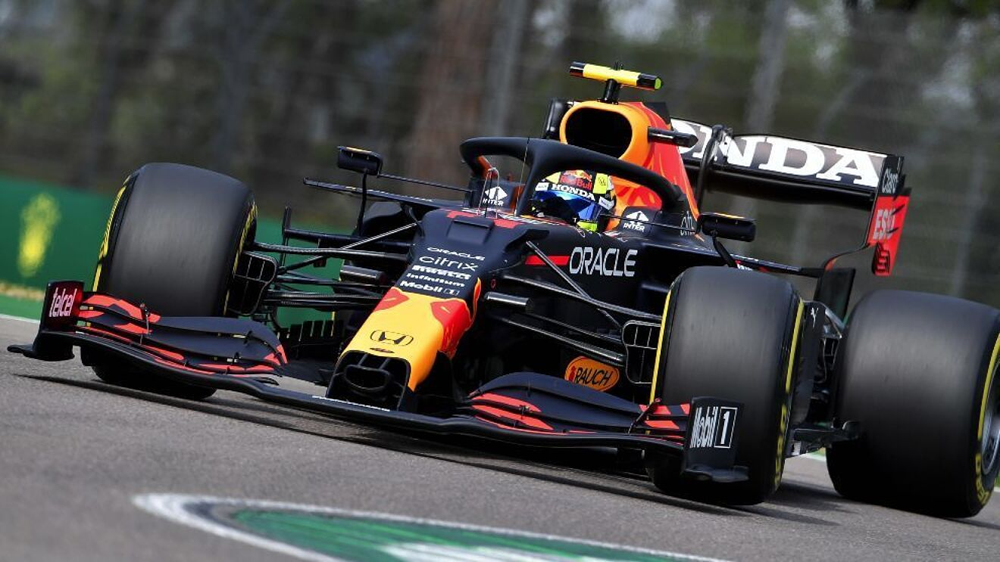
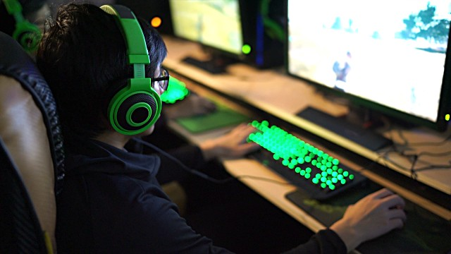

Biking
I love to bike around my city either it be by a road bike and going through the streets as fast as possible, going through trails with a mountain bike or just flowing with a BMX. It is just quite peaceful when you have earphones in and just exploring the city.
Racing
I also enjoy wathcing F1 with my favourite team being Red Bull since as a brand they do a lot of crazy things. As I love watching racing I also like going go karting from time to time with my mates.
Video Games
Playing video games is a big part of my life since I do that a lot with thousands of hours poured into games. Mostly FPS games such as Rainbow Six Siege, which I was a semi-pro at, but also chilled out games like Minecraft, but with tech and magic mods.
